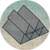
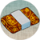
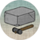
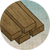

Resources
- Cotton - This enables construction of a legendary yari school.
- Crafts - This enables construction of a kabunakama.
- Warhorses - This enables construction of advanced cavalry buildings.
- Iron - This enables construction of advanced sword buildings.
- Incense - This enables construction of legendary temples.
- Raw Silk - This enables construction of legendary entertainment and bow buildings.
- Stone - This enables construction of Imperial roads and citadels.
- Wood - This enables construction of advanced ports and ships.
Other Specialities